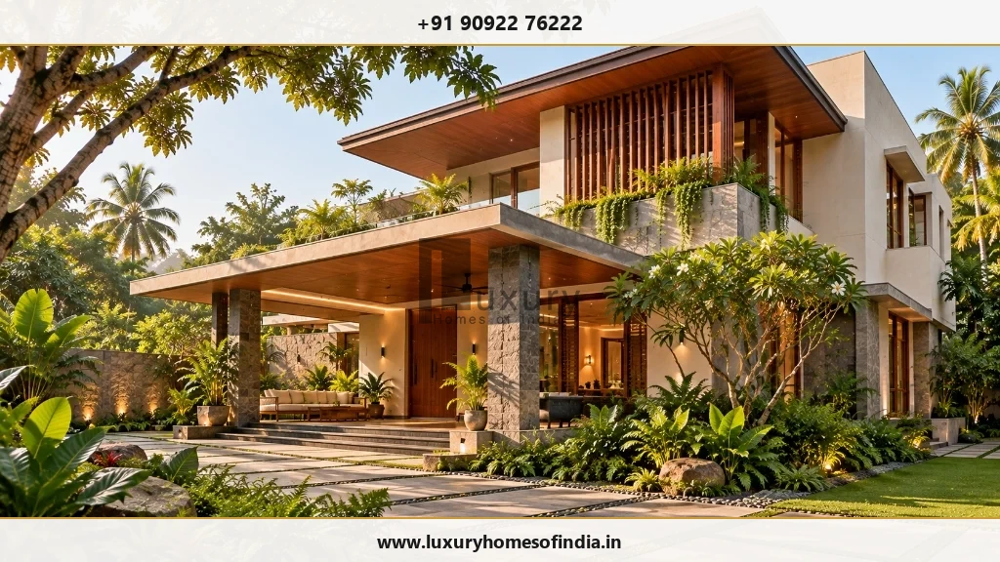
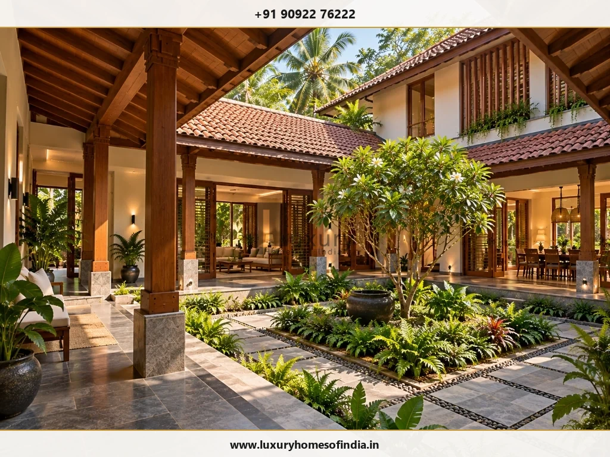
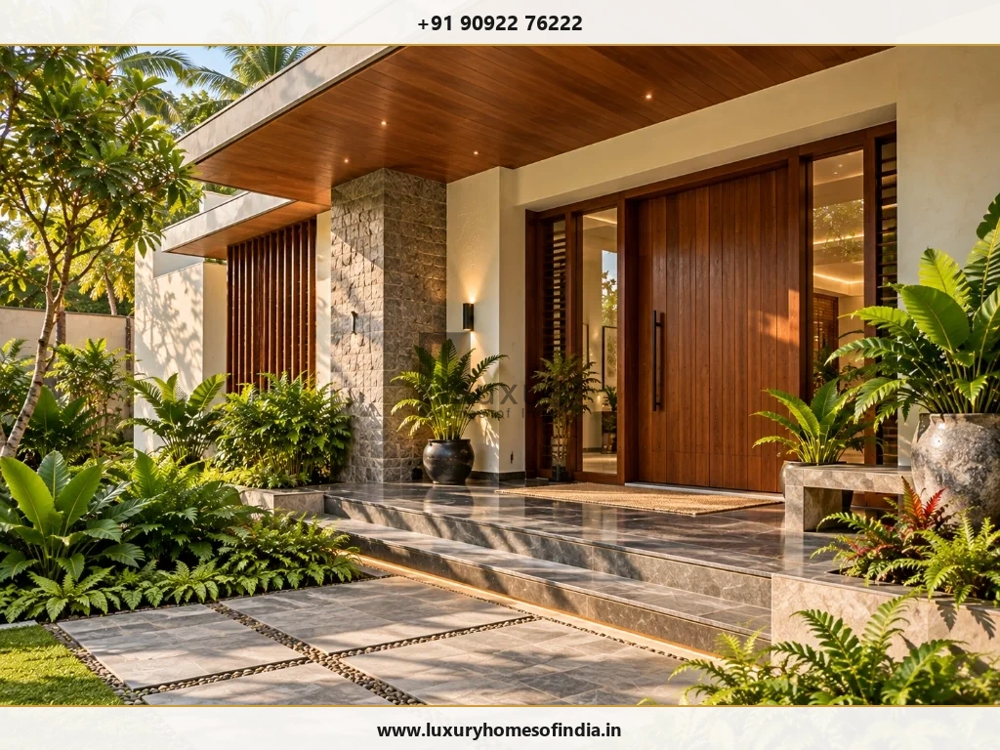

Turnkey Luxury Home Construction in Chennai
Build a bespoke home with coordinated design, construction, and interiors—supported by a clearly defined scope, responsibilities, and handover plan.
Executive Summary
Turnkey luxury home construction is a single-source delivery approach where one team coordinates architectural planning, structural engineering, civil execution, MEP building services, interior fit-outs, and handover deliverables under a clear contract boundary. In Chennai, successful turnkey delivery relies on explicit specification agreements, transparent decision schedules, and structured variation protocols.

What is Turnkey Luxury Home Construction?
Building a luxury home involves far more than selecting an architectural elevation style. Design decisions directly dictate structural foundation loads, electrical routing, plumbing stacks, material selection, procurement lead times, and construction sequencing.
Turnkey home construction is a project delivery approach in which a builder coordinates the work defined in an agreed project scope, with the intention of handing over a completed home. However, the term does not automatically mean every service, material, approval, furnishing, or external feature is included by default. Those details depend on your specific proposal and contract agreement with Luxury Homes of India (LHI).
Before appointing a turnkey builder in Chennai, clarify:
- Design & Engineering Services: Which architectural, structural, and MEP drawings are included.
- Construction & Building Services: What civil masonry, RCC framing, electrical, and plumbing scope is covered.
- Materials & Allowances: Which specific material brands, grades, and prime cost allowances are specified.
- Interiors & External Works: Whether modular kitchens, wardrobes, compound walls, paving, and landscaping are included.
- Statutory Approvals: Who prepares planning submissions, coordinates with authorities (CMDA/GCC), and pays statutory charges.
- Testing & Handover: What inspections, hydrostatic line tests, snagging rectifications, and warranty manuals are provided.
- Owner Responsibilities: Which items remain excluded for the homeowner to arrange independently.
The true value of turnkey delivery lies in coordinated responsibilities and clearly documented expectations—not simply in the marketing label used to describe the service.
One Coordinated Plan for Your Home
1. Architectural Design & Planning
A well-planned home should respond directly to your plot orientation, family lifestyle, acoustic privacy requirements, and long-term space needs. Discuss room relationships, daylight, cross-ventilation, outdoor verandas, and future elevator or solar power provisions. If Vastu principles matter to your household, identify those preferences early during initial layout planning.
2. Structural Engineering & Site Conditions
Architecture and structural engineering must work together from the outset. Foundation choices (raft vs. pile footings) should respond to site geotechnical soil testing and proposed building loads. Large open spans, double-height spaces, cantilever decks, and rooftop terraces must be engineered before construction commitments are finalized.
3. Civil Construction Execution
The agreed engineering drawings and Bill of Quantities form the foundation of site execution. Clarify civil work packages, material procurement dependencies, concrete curing protocols, quality inspection checkpoints, and safety measures required before each stage proceeds.
4. Interior Design & Finishes
Interior layout choices influence electrical switch locations, plumbing stub-outs, false ceiling framing, joinery detailing, and installation sequences. Discuss marble flooring, kitchen layouts, wardrobes, bathrooms, lighting, and custom woodwork together. Confirm which items are in the base contract, which are budget allowances, and which require separate appointments. Read our guide on luxury home interior design in Chennai.
5. Smart-Home & Automation Systems Integration
Automation is seamless when planned during preliminary architectural design rather than added as a retrofit. Discuss switch controls, server panel wiring, device locations, Wi-Fi coverage, power back-up compatibility, and long-term maintenance access before walls are plastered.

What Should a Turnkey Construction Proposal Include?
A comprehensive proposal makes contractual boundaries clear, enabling homeowners to evaluate alternatives and understand total financial commitments before signing:
| Project Area | Key Scope Parameters to Clarify |
|---|---|
| Design & Engineering | Architectural drawings, structural calculations, 3D visualization, revision limits, and consultant fees. |
| Statutory Approvals | Submission drawing preparation, liaison responsibility, municipal fees, development charges, and exclusions. |
| Civil & Structural Works | Substructure footings, RCC frame, solid brick masonry, roof slab, waterproofing, and structural steelwork. |
| Building Services (MEP) | Electrical wiring, distribution boards, sanitaryware piping, water sumps, drainage lines, and HVAC ducting. |
| Interior Execution | Flooring marble, modular kitchen cabinets, bedroom wardrobes, joinery, light fixtures, and custom furniture. |
| External Works | Compound walls, automated entry gates, driveway paving, external drainage, and landscape preparation. |
| Specialist Systems | Home elevators, swimming pools, solar PV panels, home automation, and acoustic media room insulation. |
| Completion & Handover | Hydrostatic pipe testing, electrical load checks, snagging rectifications, as-built drawings, and warranty manuals. |
| Aftercare Commitments | Defect liability period duration, structural warranty terms, emergency repair protocols, and maintenance exclusions. |
How Involved Will You Need to Be?
Turnkey delivery coordinates site execution, but it does not eliminate the homeowner's role in critical decisions. You will need to approve floor plans, select stone slabs, confirm sanitaryware models, and review mock-ups before procurement or installation. Delayed selections or late design changes after ordering can impact budget and site timelines.
Before work begins, establish clear project protocols:
- Who is authorized to approve design decisions and financial variation orders.
- A documented schedule of decision deadlines for every construction phase.
- How site progress, pending decisions, and material lead times will be reported.
- Which costs and responsibilities remain outside the primary turnkey contract.
Managing Changes During Construction
Personalization is a key aspect of building a bespoke luxury residence. However, altering one element during construction often affects several connected work packages:
- Moving an internal partition wall may require structural lintel review and electrical conduit re-routing.
- Changing a bathroom plumbing fixture grade can alter floor drop depths and waterproofing details.
- Selecting an imported finish stone may extend procurement lead times by weeks.
An agreed Variation Order protocol should record: (1) Requested change & rationale, (2) Technical drawing review, (3) Net cost impact, (4) Schedule impact, and (5) Written homeowner authorization before execution.

Plan for Handover From the Beginning
Handover requirements should be established during contract finalization rather than left until construction ends. Depending on your agreed scope, ensure your contract specifies:
- Joint multi-point site inspections and itemized snagging list resolution.
- Hydrostatic pressure testing of plumbing lines and electrical load balance checks.
- Operating manuals for home automation, water filtration, and HVAC systems.
- Product warranty certificates for roofing, waterproofing, switches, and appliances.
- As-built architectural, structural, and MEP layout drawings.
- Defect liability period terms and emergency contact support.
Let's Define the Scope of Your Home
Bring your ideas, plot details, and expectations to a project discussion with Luxury Homes of India. Explore a turnkey approach that connects personal design with clearly documented responsibilities and coordinated execution.
Call +91 90922 76222 Request Turnkey Proposal